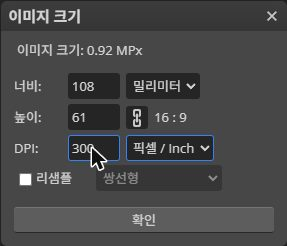
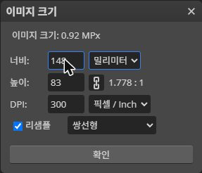
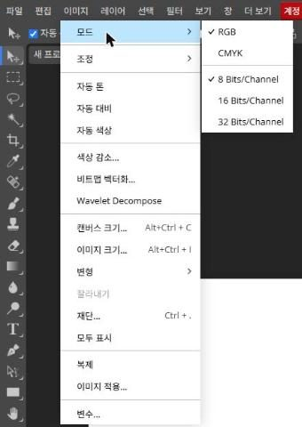
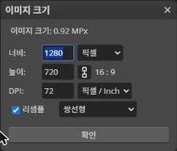
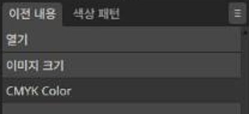
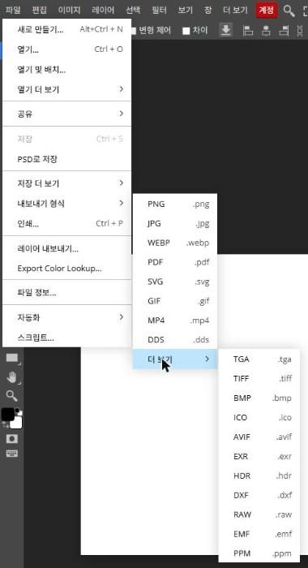
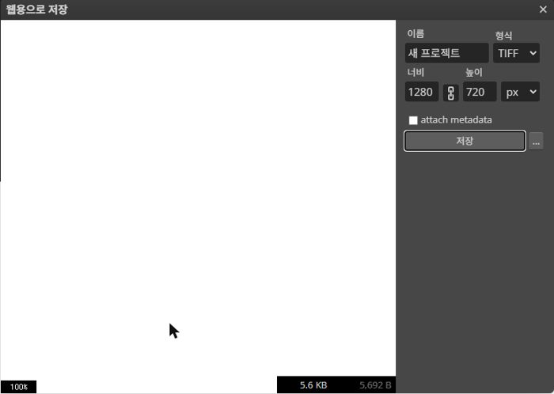

그림 한 장을 인쇄소에 보낼 파일로
재료 그림을 직접 만들고, 배경을 지우고, 인쇄용 파일(300 DPI · CMYK · TIFF)로 바꿔 이름 규칙대로 묶어요.
- 구글 플로우 — 재료 그림 만들기 (2K 업스케일)
- 배경 제거 도구 6가지 — 파이어플라이 · remove.bg · removal.ai · 픽슬러 · MS 디자이너 · 윈도우 사진 앱
- 포토피아(가입 없이 쓰는 웹 포토샵) — DPI · CMYK · 저장
오늘 실습할 그림 2장을 먼저 만들어요
배경 제거·DPI·CMYK를 해 보려면 그림이 있어야 해요. 아래 조립기에서 고르면 플로우 프롬프트가 자동으로 완성돼요. 같은 인물로 단색 배경 1장 + 장면 배경 1장을 만들어요.
1-1배경색 표 — 헥스 코드
헥스 코드(#으로 시작하는 6자리 색 번호)를 프롬프트에 넣으면 플로우가 그 색으로 바탕을 칠해요. 표의 색 칸을 누르면 아래 조립기에 바로 들어가요.
| 색 | 이름 | 헥스 코드 | 피할 것 (겹치면 같이 지워져요) |
|---|---|---|---|
| 퓨어 화이트 | #FFFFFF | 흰 옷·흰 머리·밝은 피부 가장자리가 같이 지워질 수 있어요 | |
| 퓨어 블랙 | #000000 | 검은 머리·검은 옷이 배경과 붙어서 같이 지워져요 | |
| 크로마 그린 | #00B140 | 초록 옷·나뭇잎 소품은 피하세요 | |
| 크로마 블루 | #0047BB | 파란 옷·청바지는 피하세요 | |
| 연회색 | #EDEDED | 흰색·회색 옷과 구분이 약하고 그림자처럼 보일 수 있어요 | |
| 마젠타 | #FF00FF | 분홍·보라 옷은 피하세요 (사람 그림엔 거의 안 쓰는 색이라 잘 분리돼요) |
1-2프롬프트 조립기
순서가 중요해요: 화풍을 맨 앞에 두면 그림체가 흔들리지 않고, 금지 문장을 넣어야 배경 제거가 쉬운 깨끗한 바탕이 나와요. 플로우에는 영어 프롬프트만 넣으세요.
1-3플로우에서 2장 만들기
- 구글 플로우 열기 ↗ → 새 프로젝트 · 3:4 · 4장씩
- 그림 A — 단색 배경: 조립기 ③ 배경 = 「단색 배경」 → 복사 → 붙여 넣기 → 4장 중 1장 고르기
- 그림 B — 장면 배경: 같은 장르·인물로 ③ 배경 = 「장면 배경」 → 복사 → 이때 그림 A를 첨부하면 같은 인물로 나와요
- 두 장 다 다운로드 → 2K 업스케일
- ③을 「섞임」으로 한 장 더 — 단색 바탕에 소품 일부가 걸친 그림은 도구마다 결과가 크게 달라요.
- 같은 인물을 퓨어 화이트·퓨어 블랙 두 가지로 뽑아 겹침 실험.
- 바탕에 그림자·바닥이 생기면 → 프롬프트 끝의 "no shadows, no gradient, no floor"가 남아 있는지 확인하고 다시 뽑기.
- 그림 B 인물이 달라지면 → 그림 A를 첨부했는지 확인.
- ⑤ 인물 바꾸기는 영어로 쓰세요. 우리말이 섞이면 결과가 흔들려요.
- 그림 A(단색) + 그림 B(장면) — 2K로 받은 파일
- 쓴 프롬프트 2개 (복사해서 붙이기)
픽셀 · DPI · 인쇄 크기 — 세 가지만 알면 돼요
화면에서 예쁜 그림도 인쇄하면 흐려질 수 있어요. 이유는 점(픽셀)의 개수 때문이에요.
2-1세 가지 말
픽셀 (px)
그림을 이루는 점의 개수. 그림이 가진 진짜 정보예요.
DPI
dots per inch — 1인치(25.4mm)에 점을 몇 개 찍을지. 책 인쇄는 300.
인쇄 크기
픽셀 ÷ DPI × 25.4 = mm. 점은 그대로인데 촘촘히 찍으면 그림이 작아져요.
| 그림 픽셀(가로) | DPI 300일 때 인쇄 폭 | 쓸 수 있는 곳 |
|---|---|---|
| 1280px | 약 108mm | A5 반쪽 그림, 작은 삽화 |
| 1748px | 148mm | A5 한 쪽 꽉 채우기 |
| 2480px | 210mm | A4 폭 / A5 세로 길이 |
2-2리샘플 — 켜면, 끄면 크기가 바뀌어요
리샘플(resample)은 점의 개수를 새로 계산해 바꾸는 것이에요. 포토피아 「이미지 크기」 창의 체크 하나로 결과가 완전히 달라져요. 먼저 그림으로 보고, 실제 화면으로 확인해요.
| 리샘플 끔 ☐ | 리샘플 켬 ☑ | |
|---|---|---|
| 점(픽셀) 개수 | 그대로 (1280 → 1280) | 바뀜 (1280 → 1748, 468개를 새로 만듦) |
| DPI를 300으로 바꾸면 | 인쇄 크기가 작아짐 (108mm) | 인쇄 크기를 내가 정한 대로 (148mm) |
| 그림 품질 | 원본 그대로 | 키우면 흐려짐 · 줄이면 괜찮음 |
| 언제 쓰나 | 오늘 기본 — 숫자만 300 | 그림이 판형보다 클 때 줄이기만 |
아래 두 화면은 연습용 빈 캔버스(1280×720px, 가로로 긴 16:9)로 찍었어요. 그래서 세로 길이가 짧게 나와요. 내 3:4 그림은 숫자가 달라요.

점은 그대로라 그림 품질은 그대로. 72 DPI(1인치에 점 72개)로 넓게 찍던 걸 300 DPI(1인치에 점 300개)로 촘촘히 찍으니 종이 위 크기만 줄어요. → 기본은 끄기

늘어난 468개 점은 프로그램이 지어낸 것(옆 점 색을 섞어 만든 것)이에요. 그래서 키우면 흐려지고, 줄일 때만 괜찮아요. 창 위의 「0.92 MPx」는 확인을 누르기 전 원래 크기라 아직 안 바뀐 거예요.
- 리샘플 끄고 DPI 300 → 인쇄 크기(mm) 확인
- 원하는 크기보다 크면 → 리샘플 켜고 줄여도 OK
- 모자라면 → 포토피아로 키우지 말고, 플로우에서 2K 업스케일로 다시 받기
2-3오늘 쓰는 길 — 2K로 받고, 숫자만 300
플로우가 이미 2K로 크게 키워 줬으니, 포토피아에서는 점을 더 만들지 않고 "이 그림은 300 DPI로 찍어라"라는 숫자만 바꿔요. 그림은 그대로, 인쇄 크기만 정해져요.
2-4내 그림 계산기 — 몇 mm로 찍힐까
픽셀 숫자만 넣으면 300 DPI일 때 몇 mm로 인쇄되는지, 판형을 꽉 채우려면 몇 픽셀이 필요한지 바로 보여 줘요.
처음 칸의 숫자는 예시예요. 포토피아 「이미지 크기」 창에서 내 그림의 픽셀을 보고 바꿔 넣으세요.
2-5RGB와 CMYK
같은 그림, 6가지 도구로 배경 지우고 비교하기
캐릭터·소품만 오려 내면 표지에 얹거나 미리캔버스에서 다른 배경 위에 놓을 수 있어요. 도구마다 결과 크기와 가장자리 솜씨가 달라서 직접 비교해 봐요.
3-1무엇을 지울까
3-2도구 6가지
1. Adobe Firefly 배경 제거
Firefly 배경 제거 열기 ↗ · Adobe 계정 로그인
- 페이지에서 「이미지 업로드」 (JPG·PNG·WEBP, 50MB 이하)
- 자동으로 배경이 지워짐 → 다운로드(PNG)
💡 무료는 하루 생성 크레딧 안에서 써요. 머리카락·털 가장자리에 강해요. 미리보기의 회색 바둑판은 투명하다는 표시예요.
2. remove.bg
remove.bg 열기 ↗ · 가입 없이
- 「이미지 업로드」
- 결과 확인 → 「다운로드」
💡 무료 다운로드는 0.25MP(약 625×400px) 저해상도예요. 고해상도는 유료 크레딧. → 인쇄용으로는 못 써요, 비교용으로만.
3. removal.ai
removal.ai 열기 ↗ · 가입 없이 (가입하면 고해상도 1장 무료)
- 「Upload Image」
- 결과 → 다운로드(미리보기)
💡 무료 다운로드는 remove.bg처럼 0.25MP 저해상도. 가입하면 고해상도 1장 무료.
4. Pixlr 배경 제거
Pixlr 배경 제거 열기 ↗ · 가입 없이
- 이미지 올리기 (여러 장 한꺼번에 가능)
- 결과 → 다운로드
💡 무료로 쓸 수 있고 여러 장을 한 번에 지울 수 있어요. 무료는 하루 저장 횟수 제한이 걸릴 수 있어요.
5. Microsoft Designer
MS Designer 배경 제거 열기 ↗ · Microsoft 계정 로그인
- Designer 열기 → 내 미디어에 그림 올리기
- 그림 선택 → 「배경 제거」
- 다운로드 → 투명 배경(Make background transparent) 체크
💡 다운로드할 때 투명 배경 체크를 안 하면 흰 배경이 붙어 나와요.
6. 윈도우 사진 앱 · 그림판
윈도우 11 기본 앱 · 사진 앱 업데이트(스토어) ↗ · 인터넷·가입 없이
- 사진 앱: 그림 열기 → 편집 → 배경 → 제거 → 저장 → 복사본으로 저장(PNG)
- 그림판: 그림 열기 → 이미지 → 배경 제거 → 다른 이름으로 저장
💡 내 컴퓨터 안에서 처리해요. 메뉴가 안 보이면 윈도우·사진 앱 업데이트가 필요해요. 그림판에서 그냥 「저장」하면 원본을 덮어써요.
3-3비교하기
- 그림 A와 그림 B를 둘 다 같은 도구에 넣기 — 도구 3개 이상 (한 걸음 더: 6개 모두)
- 결과 PNG를 포토피아로 열기 → 이미지 → 이미지 크기에서 픽셀 크기 확인
- 확대(돋보기)해서 가장자리 확인 — 과슈+연필 선 그림은 연필 선이 같이 지워지는지 꼭 보기
- 아래 표 채우기
| 도구 | 그림 A · 단색 배경 | 그림 B · 장면 배경 | 결과 픽셀 크기 | 인쇄에 쓸까? | ||
|---|---|---|---|---|---|---|
| 가장자리 | 흰 테두리·색 번짐 | 인물만 남았나 | 가장자리 | |||
| Adobe Firefly 배경 제거 | ||||||
| remove.bg | ||||||
| removal.ai | ||||||
| Pixlr 배경 제거 | ||||||
| Microsoft Designer | ||||||
| 윈도우 사진 앱 · 그림판 | ||||||
- 원본은 2K인데 결과가 작아졌다면 → 무료 저해상도 다운로드예요. 인쇄용으로 못 써요.
- 투명하게 받았는지: 포토피아에서 열었을 때 배경이 회색 바둑판이면 투명이에요. 흰색이면 다시 받기.
- 로그인이 필요한 도구(파이어플라이·MS 디자이너)가 막히면 가입 없는 도구(픽슬러·윈도우 사진 앱)로 먼저 해요.
- 윈도우 사진 앱에 「배경」 메뉴가 없으면 → Microsoft Store → 라이브러리 → 업데이트 받기.
- 비교표 (캡처 또는 글)
- 그림 A·B에서 가장 잘 지운 PNG 각 1장 + 어느 도구였는지 한 줄
- 단색일 때와 장면일 때 결과가 어떻게 달랐는지 한 줄
내 그림을 DPI 300으로 맞추기
STEP 1의 그림 A·B(2K)와 배경을 지운 PNG로 해요.
4-1열기
- 포토피아 열기 ↗ (가입 없이 돼요. 오른쪽 광고는 무시)
- 「컴퓨터에서 파일 열기」 → 내 그림 고르기
4-2이미지 크기 창 열기


- 이미지 → 이미지 크기…
- 너비·높이(픽셀)를 적어 두기
4-3리샘플 끄고 DPI 300
- 「리샘플」 체크를 끄기
- DPI 칸에 300 — 픽셀 숫자는 그대로인지 확인 (숫자만 바꾸는 것)
- 너비 옆 단위를 「밀리미터」로 바꾸기 → 인쇄 크기 확인
- 판정: A5 한 쪽 그림이면 너비 148mm 이상인가?
- 「확인」
| 판정 | 할 일 |
|---|---|
| 148mm 이상 | 그대로 확인. 더 크면 리샘플 켜고 148mm로 줄여도 OK |
| 148mm 미만 | 플로우에서 2K 업스케일로 받았는지 확인 → 아니면 다시 받기 / 2K로도 모자라면 반쪽 그림·작은 삽화로 쓰기 |
- 리샘플 끔 · DPI 300 · 밀리미터로 바꾼 이미지 크기 창 캡처
- 판정 한 줄: 「148mm 넘음」 또는 「모자람 → 다시 받기」
CMYK로 바꾸고 TIFF · PNG로 저장
순서가 중요해요. 웹용 PNG를 먼저 저장하고, 그다음 CMYK로 바꿔 인쇄용 TIFF를 저장해요.
5-1웹용 PNG 먼저
파일 → 내보내기 형식 → PNG. 아직 RGB 상태일 때 저장해야 화면용 색이 그대로 남아요.
5-2CMYK로 바꾸고 색 비교
- 바꾸기 전 화면 캡처
- 이미지 → 모드 → CMYK
- 오른쪽 「이전 내용」에 CMYK Color가 생기면 성공
- 바꾼 뒤 화면 캡처 → 두 장을 나란히

5-3인쇄용 TIFF 저장


- 「이름」 칸에 STEP 6 규칙대로 이름
- attach metadata 체크
- 너비·높이 칸은 건드리지 않기 (여기서 바꾸면 크기가 또 바뀌어요)
- 「저장」
5-4다시 열어 확인
- 저장한 TIFF를 포토피아로 다시 열기
- 이미지 → 모드에 CMYK 체크가 있나?
- 이미지 → 이미지 크기에 DPI 300인가?
- RGB / CMYK 비교 캡처 + 탁해진 곳 한 줄
- 다시 연 TIFF의 모드(CMYK)·DPI(300) 캡처
이름만 봐도 몇 쪽 무슨 그림인지
책 한 권이면 그림이 수십 장이에요. 이름 규칙이 없으면 순서가 섞이고, 업로드 사이트에서 한글 이름이 깨지기도 해요.
책이름_p쪽번호(2자리)_내용_v버전.확장자| 예시 | 뜻 |
|---|---|
radio_p01_cover_v1.tif | 라디오 책 1쪽 표지, 첫 번째 판, 인쇄용 |
radio_p03_toenmaru_v2.tif | 3쪽 툇마루, 고친 두 번째 판 |
radio_p03_toenmaru_v2.png | 같은 그림의 웹용 |
- 영문 소문자
- 띄어쓰기 대신 밑줄(_)
- 쪽번호는 01, 02… (그래야 순서대로 정렬)
- 고치면 v1 → v2 (덮어쓰지 않기)
radio/ ├ 01_original/ 플로우 원본 ├ 02_print_tif/ CMYK·300DPI └ 03_web_png/ RGB·웹용
- 폴더 안 파일 목록 캡처 (이름 규칙이 보이게)
오늘 올릴 것 한눈에
내 칸에 아래 순서대로 올리면 끝이에요.
| # | 올릴 것 | STEP | ✓ |
|---|---|---|---|
| 1 | 그림 A(단색) · 그림 B(장면) + 프롬프트 2개 | 1 | |
| 2 | 배경 제거 비교표 + A·B에서 가장 잘 지운 PNG | 3 | |
| 3 | 이미지 크기 창 캡처 + 판정 한 줄 | 4 | |
| 4 | RGB/CMYK 비교 + TIFF 다시 연 확인 | 5 | |
| 5 | 폴더 파일 목록 캡처 | 6 |